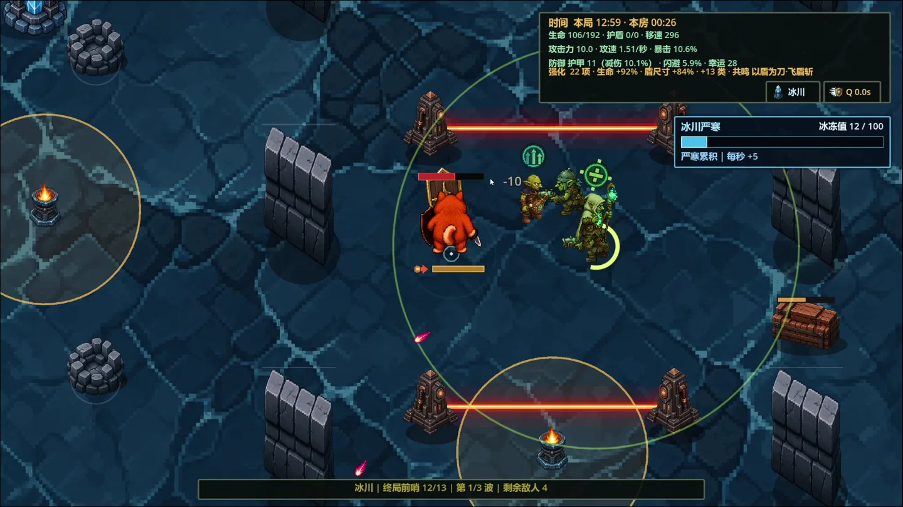
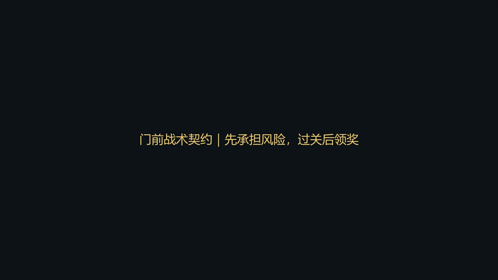

主作品 · 独立完成 · 2026.07—至今
《我的刀盾》
一款 2D 俯视角动作 Roguelite。我负责产品定义、系统与战斗策划、原型实现、测试和 Windows 版本交付。
13完整房间流程
10类普通敌人
258/258自动验证通过
WindowsAlpha v0.1


Godot 4.7.1GDScriptPythonGit
用长期竞技游戏理解、业务分析经验与工程能力，把复杂问题做成可玩、可验证的作品。
主作品 · 独立完成 · 2026.07—至今
一款 2D 俯视角动作 Roguelite。我负责产品定义、系统与战斗策划、原型实现、测试和 Windows 版本交付。


环盾挡弹、冲锋清弹、三层盾势与第三刀反击，把防御行为转化为可预期的进攻回报。
双阶段三选一、四档品质、互斥共鸣突变，让技能选择持续改变局内打法。
门前战术契约允许玩家承担下一房弹潮或群猎风险，换取加速流派成型的共鸣印。
90 秒完整流程实机
从基础战斗、局内构筑与特殊地形，一路看到 R13 三阶段 Boss、实际击杀和胜利结算。
百度网盘提取码：i581
观看 7:25 完整版系统拆解与优化案 · 2026.08—2026.09
基于 500+ 次最高难度实战、18 系基础通关和 80+ 精灵家族的 60 级零成长挑战， 将技能、特性、奖章、魔瓶与代币收敛为“生存底盘 + 输出闭环”的构筑评估框架。
PVE 射击系统分析 · 9 页 · 2026.09
基于 CS2 2000h+、VALORANT 500h+ 的竞技射击经验，并结合实际 PVE 射击体验， 拆解枪械、资源、角色能力与重复游玩如何持续制造可理解、有代价、能反馈的玩家选择。
主项目 · 独立产品设计与全栈交付 · 2026.06—至今
面向业务与运营人员的数据分析 Agent，将自然语言提问转化为指标核验、受控取数、图表展示与结果解释。 用户可在自身权限范围内获得分析结果，并查看指标口径、查询依据与执行过程，减少临时取数和反复确认口径的沟通。
独立完成产品定义、流程设计与全栈交付。
提供合成经营数据交互查询与真实模型执行记录回放。
结合登录身份与工作区权限、只读 SQL 和 6 步执行上限，约束越权访问、非法输出与循环失控。
后端 466 项、数据库集成 65 项、前端 74 项；自动评测核验结构、任务状态与证据。
LangGraph · FastAPI · Vue 3 · PostgreSQL · Redis · Docker
围绕“JD 理解 → 简历诊断 → 能力补齐 → 模拟面试”搭建完整用户路径，覆盖结构化输出、多格式解析与异常降级。
清洗 10 万余条轨迹日志，将调度问题拆分为下一步动作分类与耗时预测，Kaggle 公榜 F1 达 0.966。
以 2,264 条方面级样本比较传统基线与 DistilBERT，并将 839 条负向样本归纳为产品、服务与硬件投诉主题。
补充交付 · 实时通信产品原型
围绕公共聊天室与一对一私聊搭建完整通信系统，覆盖注册登录、房间创建与切换、 在线状态、个人资料，以及图片、音频和表情消息，补充复杂用户流程、实时状态同步与全栈原型能力。
03 / 个人背景
三年供应链财务分析经历让我习惯从数据、口径与风险出发；硕士阶段聚焦商业 AI， 并持续用独立项目验证产品设计与工程落地能力。
信息科学与技术管理硕士 · Artificial Intelligence for Business
财务分析 · 从实习生晋升至财务分析师
材料科学与工程学士 · 2022 届优秀毕业生
04 / 核心优势
把长期游戏理解、真实业务经验与工程能力，转化为可体验、可验证的策划和产品成果。
长期研究复杂对抗系统，能够从资源循环、信息博弈、角色职责与反馈节奏中提炼可落地的系统和战斗设计判断。
三年供应链财务分析经历，习惯先厘清指标口径、业务约束与风险边界，再用数据验证方案，而不是只停留在主观体验。
独立完成《我的刀盾》与 InsightLens AI，覆盖需求定义、机制或流程设计、原型开发、真实模型接入、自动化测试与公网交付。